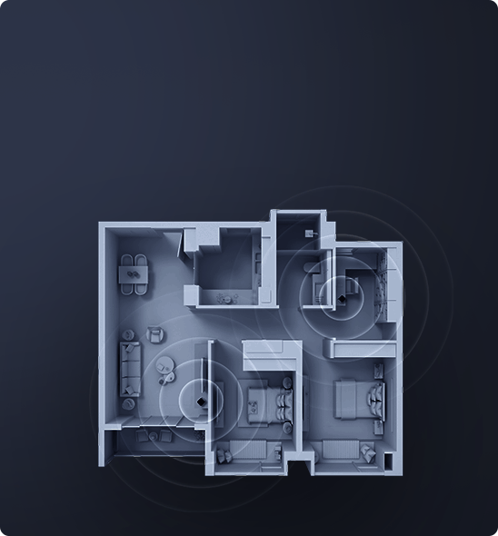
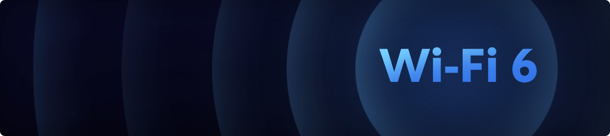
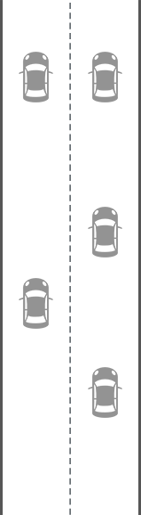
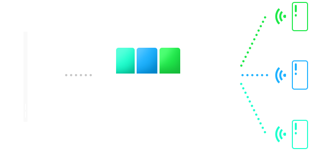
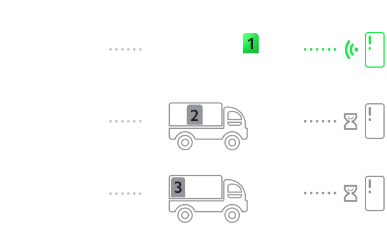
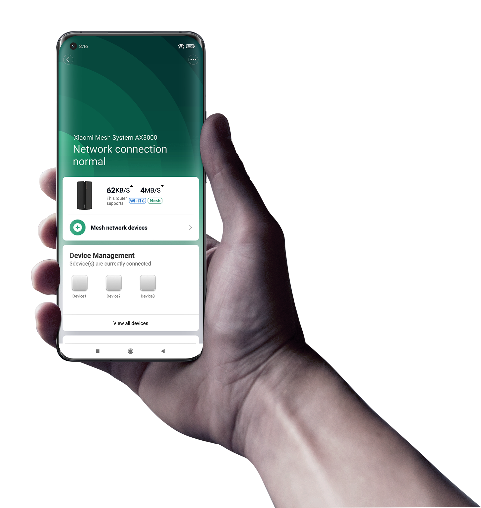
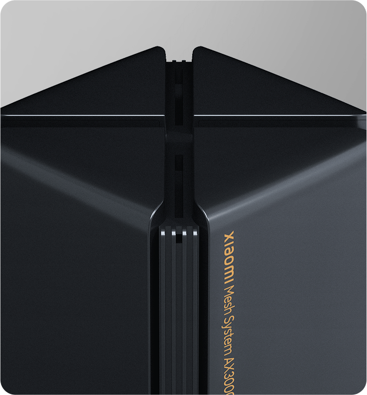
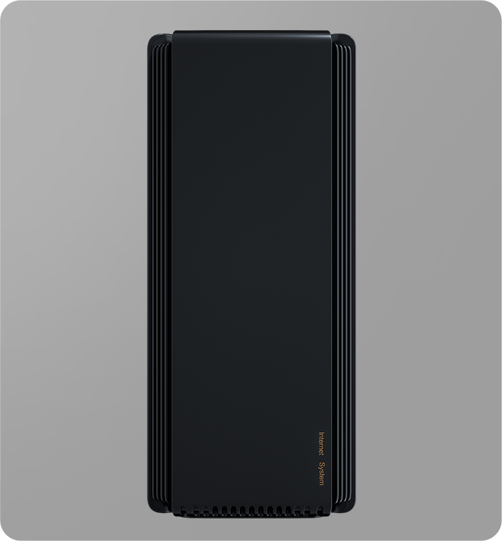
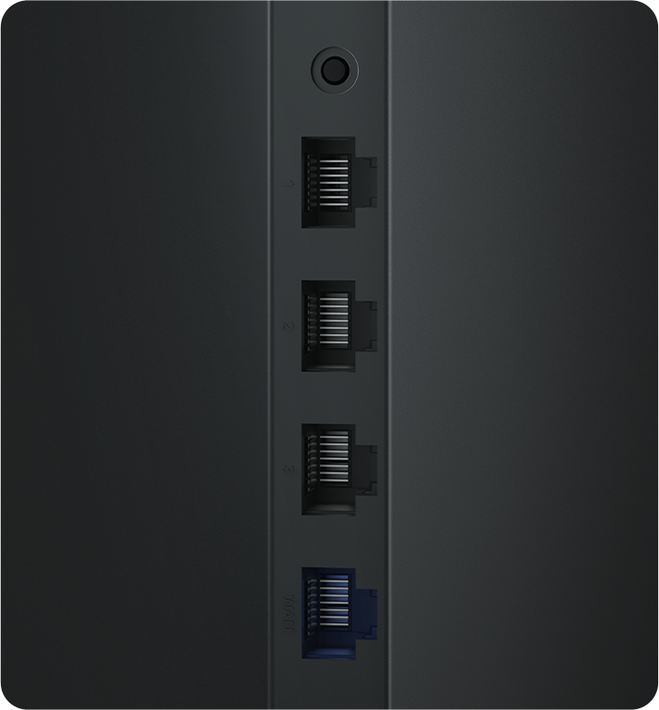

<link href="./assets/css/main.css" rel="stylesheet">

<main class="AX3000">

<div class="secao secao1 lazy" data-type="bg" data-id="s9kf30ug4f" data-background-image="./assets/media/Overview_PC2560_01.jpg" data-loaded="true" style="background-image: url(./assets/media/Overview_PC2560_01.jpg);">
    
<div class="secao1_content">
    
<span data-key="name_1" class="texto-xm name_1 eco_name-72 f-bold" data-type="text" data-id="u1h1kbj9lh">
<span style="vertical-align: inherit;">Roteador Mesh Wi-Fi 6 Xiaomi AX3000</span></span>
</span></div>
    
<span data-key="slogan_1" class="texto-xm slogan_1 eco_slogan f-medium" data-type="text" data-id="ffp2bjxblv">
<span style="vertical-align: inherit;">Conexão poderosa com Wi-Fi 6</span></span>
</span>
    
<div data-id="lw6vcd0k8s" class="principal-xm price-common">
<span class="principal-xm__sNum"></span></div></div>
    
<div class="secao secao2 lazy" data-type="bg" data-id="mnlbakqh6v" data-background-image="" data-loaded="true">
                  
<div class="secao2_left">

    
<span data-key="slogan_2" class="texto-xm slogan_2 eco_ksp-title f-bold" data-type="text" data-id="zthtd1z7j1">
<span style="vertical-align: inherit;">Cobertura Wi-Fi estável de até 
371 m² com suporte da
tecnologia Mesh*.</span>
</span></div>
    
<div class="secao2_content">
<div>

      
<span data-key="slogan_3" class="texto-xm slogan_3 eco_ksp-title f-bold" data-type="text" data-id="ux5gq463k1">
<span style="vertical-align: inherit;">Wi-Fi 6 Dual-Band para uma experiência online tranquila</span>
</span></div>
    
<div class="secao2_content_bottom">
<div>
      
<span data-key="slogan_4" class="texto-xm slogan_4 eco_ksp-title f-bold" data-type="text" data-id="itbiwv2xfp">
<span style="vertical-align: inherit;">Conexões rápidas com velocidade de até 2976 Mbps</span>
</span></div>
    
<div>

      
<span data-key="slogan_5" class="texto-xm slogan_5 eco_ksp-title f-bold" data-type="text" data-id="t1e9w2526t">
<span style="vertical-align: inherit;">Conexão estável para até 254 dispositivos</span>
</span></div></div></div></div>
    
<div class="secao secao3 lazy" data-type="bg" data-id="jj75qfs721" data-background-image="./assets/media/Overview_PC2560_03.jpg" data-loaded="true" style="background-image: url(./assets/media/Overview_PC2560_03.jpg);">
    
<div>
<span data-key="viewover_1" class="texto-xm viewover_1 eco_title f-bold" data-type="text" data-id="5k2yp4cvnu">
<span style="vertical-align: inherit;">O sistema Mesh permite combinar 2 roteadores para obter uma cobertura Wi-Fi ainda mais completa
</span></span>
    
<span data-key="viewover_2" class="texto-xm viewover_2 eco_text f-light" data-type="text" data-id="068eo10rmk">
    
<span style="vertical-align: inherit;">Combine dois roteadores Mesh Wi-Fi 6 Xiaomi AX3000 para uma cobertura Wi-Fi de até 371m² ou até 10 roteadores Xiaomi AX3000 para uma cobertura sem igual de 1.855m². Seus dispositivos alternam automaticamente entre os roteadores enquanto você se move, sem se preocupar em conectar em diversas redes Wi-Fi.</span>                  
</span></div></div>
    
<div class="secao secao4 lazy" data-type="bg" data-id="mccdtzm0ic" data-background-image="./assets/media/section4_bg.png" data-loaded="true" style="background-image: url(./assets/media/section4_bg.png);">
    
<div>
<span data-key="viewover_3" class="texto-xm viewover_3 eco_title f-bold" data-type="text" data-id="1kx3svjb28">
<span style="vertical-align: inherit;">Rede Mesh com recursos de autorreparação*</span>
</span>
    
<span data-key="viewover_4" class="texto-xm viewover_4 eco_text f-light" data-type="text" data-id="6vjemdzj59">
<span style="vertical-align: inherit;">Com os roteadores Mesh Wi-Fi 6 Xiaomi AX3000, quando uma falha é detectada,
toda a arquitetura da rede é replanejada para garantir a qualidade da sua conexão.</span>
</span></div></div>
    
<div class="secao secao5 lazy" data-type="bg" data-id="f3v8jhyeck" data-background-image="./assets/media/section5_bg.pn" data-loaded="true" style="background-image: url(./assets/media/section5_bg.png);">
    
<div>
<span data-key="viewover_5" class="texto-xm viewover_5 eco_title f-bold" data-type="text" data-id="ok10uuji30">
<span style="vertical-align: inherit;">Fácil de usar, inteligente e simples de instalar</span></span>

<span data-key="viewover_6" class="texto-xm viewover_6 eco_text f-light" data-type="text" data-id="n6jar5x5gv">
<span style="vertical-align: inherit;">O roteador Mesh Wi-Fi 6 Xiaomi AX3000 é pré-configurado de fábrica, portanto, nenhuma configuração complicada é necessária e está pronto para uso*. Melhore a velocidade da sua internet sem precisar de um especialista.</span>
</span></div></div>
    
<div class="secao secao6 lazy" data-type="bg" data-id="p68d42wexn" data-background-image="./assets/media/viewover_PC2560_06.jpg" data-loaded="true" style="background-image: url(./assets/media/Overview_PC2560_06.jpg);">
    
<div class="secao6_top">
<span data-key="viewover_7" class="texto-xm viewover_7 eco_title f-bold" data-type="text" data-id="g3jq6002uj">
<span style="vertical-align: inherit;">Não perca tempo e aproveite a conexão Wi-Fi 6 ultrarrápida</span>
</span>
    
<span data-key="viewover_8" class="texto-xm viewover_8 eco_text f-light" data-type="text" data-id="h9jk6i8rip">
<span style="vertical-align: inherit;">Conexão Dual Band 802.11ax 2,4 GHz e 5 GHz com velocidade sem fio combinada de até 2976 Mbps*. </span>
<span style="vertical-align: inherit;">Isso é mais que o dobro da velocidade de um roteador AC1200 padrão.</span>
<span style="vertical-align: inherit;">Aliado à tecnologia 1024 QAM sendo muito mais rápido que o 256 QAM do Wi-Fi 5. </span>
<span style="vertical-align: inherit;">Internet de altíssima velocidade, pois não há tempo a perder.</span></span></span></div>
    
<div class="secao6_content">
<div class="left">
<div>

     
<span data-key="viewover_11" class="texto-xm viewover_11 f32 f-medium" data-type="text" data-id="926j2b2tj6">
<span style="vertical-align: inherit;">2X2 160MHz</span>
</span></div>
                      
<div>

      
<span data-key="viewover_12" class="texto-xm viewover_12 f32 f-medium" data-type="text" data-id="osl29478js">
<span style="vertical-align: inherit;">2X2 80MHz</span>
</span></div></div>
    
<div class="right">
<span data-key="viewover_9" class="texto-xm viewover_9 eco_title f-bold"data-type="text" data-id="21ruvr423v">
<span style="vertical-align: inherit;">160MHz de largura de banda para uma experiência definitiva</span>
</span>
    
<span data-key="viewover_10" class="texto-xm viewover_8 viewover_10 eco_text f-light" data-type="text" data-id="dk6pnr3e19">
<span style="vertical-align: inherit;">Se a largura de banda for como uma rodovia, os sistemas convencionais de tráfego de 2 pistas estão sempre congestionados. </span>
    
<span style="vertical-align: inherit;">Com o roteador Mesh Wi-Fi 6 Xiaomi AX3000, no entanto, a largura de cada faixa e as velocidades na banda de 5 GHz são duplicadas*.</span>
              
<span style="vertical-align: inherit;">Desfrute de uma experiência on-line perfeita e suave, mesmo ao conectar-se com vários dispositivos.</span>
</span></div></div>
    
<div class="secao6_2">
<span data-key="viewover_13" class="texto-xm viewover_13 eco_title f-light" data-type="text" data-id="q24g6ne5w4">
<span style="vertical-align: inherit;">A transmissão OFDMA de alta eficiência possibilita o acesso à internet mais suave para vários dispositivos*
</span>
</span>
    
<span data-key="viewover_14" class="texto-xm viewover_14 eco_text f-light" data-type="text" data-id="ofn40pzig6">
<span style="vertical-align: inherit;">A tecnologia OFDMA permite que os roteadores processem fluxos de dados de vários dispositivos simultaneamente, quando dispositivos exigem maior transmissão de dados, reduzindo efetivamente o congestionamento da rede e reduzindo a latência.</span></span></div>
    
<div class="secao6_3_content">
<div>
<span data-key="viewover_15" class="texto-xm viewover_15 eco_text f-light" data-type="text" data-id="5dq0h5rqd8">
<span style="vertical-align: inherit;">Roteador Mesh Wi-Fi 6 Xiaomi AX3000</span></span>
                    
<div class="secao6_3_left">
                   
<div>
<span data-key="viewover_46" class="texto-xm viewover_46 eco_text f-light" data-type="text" data-id="s1l4uwd0fu">
<span style="vertical-align: inherit;">Dados recebidos</span></span>
    
<span data-key="viewover_47" class="texto-xm viewover_47 eco_text f-light" data-type="text" data-id="09pr2wyp6u">
<span style="vertical-align: inherit;">Dados recebidos</span></span>
    
<span data-key="viewover_48" class="texto-xm viewover_48 eco_text f-light" data-type="text" data-id="92f9f325zv">
<span style="vertical-align: inherit;">Dados recebidos</span></span>
</div></div></div>
                    
<div>
<span data-key="viewover_16" class="texto-xm viewover_16 eco_text f-light" data-type="text" data-id="wvrc9a0luq">
<span style="vertical-align: inherit;">Roteador Wi-Fi 5</span>
</span>
                      
<div class="secao6_3_right">

<div>

<span data-key="viewover_49" class="texto-xm viewover_49 eco_text f-light" data-type="text" data-id="atx3b3m0xr">
<span style="vertical-align: inherit;">Dados recebidos</span>
</span>
    
<span data-key="viewover_50" class="texto-xm viewover_50 eco_text f-light" data-type="text"data-id="1abddixtdc">
<span style="vertical-align: inherit;">Em espera</span>
</span>
    
<span data-key="viewover_51" class="texto-xm viewover_51 eco_text f-light" data-type="text" data-id="um4z3cexjf">
<span style="vertical-align: inherit;">Em espera</span>
</span></div></div></div></div></div>
    
<div class="secao secao7 lazy" data-type="bg" data-id="4f0a394sf8" data-background-image="./assets/media/section7_bg.png" data-loaded="true" style="background-image: url(./assets/media/section7_bg.png);" >
    
<div>
<span data-key="viewover_17" class="texto-xm viewover_17 eco_title f-bold" data-type="text" data-id="p3ye9h9022">
<span style="vertical-align: inherit;">Conexão estável para 254 dispositivos simultaneamente*</span>
</span>
    
<span data-key="viewover_18" class="texto-xm viewover_18 eco_text f-light" data-type="text" data-id="ool2shm3hy">
<span style="vertical-align: inherit;">A era da casa inteligente está trazendo cada vez mais dispositivos conectados para sua casa. </span>
<span style="vertical-align: inherit;">Cada roteador Mesh Wi-Fi 6 Xiaomi AX3000 vem com 256 MB de RAM para garantir a conexão perfeita em ambientes complexos com um grande número de dispositivos, como reuniões de família, festas, ambientes de trabalho ou sua casa inteligente com vários produtos conectados.</span>
</span></div></div>
    
<div class="secao secao8 lazy" data-type="bg" data-id="ppexq73tuh" data-background-image="./assets/media/002.png" data-loaded="true" style="background-image: url(./assets/media/002.png);">
    
<div class="secao8_top">
<span data-key="viewover_19" class="texto-xm viewover_19 eco_title f-bold" data-type="text" data-id="6s4e4jz9b6">
<span style="vertical-align: inherit;">Eficiência energética e muito mais durável</span></span>
    
<span data-key="viewover_20" class="texto-xm viewover_20 eco_text f-light" data-type="text" data-id="cjc68q6i0v">
<span style="vertical-align: inherit;">A tecnologia Target Wake Time só se conecta quando um sinal de transmissão é recebido,
caso contrário, permanece no modo de suspensão.
Isso reduz efetivamente o consumo de energia e prolonga a vida útil do produto.</span>
</span>
    
<span data-key="viewover_21" class="texto-xm viewover_21 f24 f-thin" data-type="text" data-id="525e4ynhm7">
<span style="vertical-align: inherit;">* As tecnologias TWT precisam ser suportadas por dispositivos endpoint.</span>
</span></div>
    
<div class="secao8_content">
<div><span data-key="viewover_22" class="texto-xm viewover_22 eco_title f-bold" data-type="text" data-id="j85wp7iwe8">
<span style="vertical-align: inherit;">Wi-Fi sem mistérios</span>
</span>
    
<span data-key="viewover_23" class="texto-xm viewover_23 eco_text f-light" data-type="text" data-id="htennnovs1">
<span style="vertical-align: inherit;">Através do aplicativo Xiaomi Home/Mi Home você acompanha e configura sua rede de alta velocidade facilmente. </span></span></div>
    

</div></div>
    
<div class="secao secao9 lazy" data-type="bg" data-id="j2rgqw3zjy" data-background-image="./assets/media/section9_bg.png" data-loaded="true" style="background-image: url(./assets/media/section9_bg.png);">
    
<div>
<span data-key="viewover_24" class="texto-xm viewover_24 eco_title f-bold" data-type="text" data-id="8arq3w938m">
<span style="vertical-align: inherit;">Elimine áreas sem sinal Wi-Fi em todos os ambientes</span>
</span>
    
<span data-key="viewover_25" class="texto-xm viewover_25 eco_text f-light" data-type="text" data-id="800s54upnt">
<span style="vertical-align: inherit;">Se você mora em um pequeno apartamento ou em uma casa grande com vários andares, temos a demanda perfeita para você aproveitar a conectividade à internet que merece.</span>
</span></div></div>
    
<div class="secao secao10 lazy" data-type="bg" data-id="sqi9xwg2jr" data-background-image="./assets/media/section10_bg.png" data-loaded="true" style="background-image: url(./assets/media/section10_bg.png);">
    
<div class="secao10_text">
<span data-key="viewover_26" class="texto-xm viewover_26 eco_title f-bold" data-type="text" data-id="d377t96bt6">
<span style="vertical-align: inherit;">Design em torre minimalista</span></span>
    
<span data-key="viewover_27" class="texto-xm viewover_27 eco_text f-light" data-type="text" data-id="cl0xnnvddx">
<span style="vertical-align: inherit;">Antenas ocultas de alto desempenho e arquitetura térmica com dissipador de calor aprimorado de metal garantem performance estável para sua conexão.</span>
</span></div>
              
<div class="secao10_img">

   
</div></div>
    
<div class="secao secao11 lazy" data-type="bg" data-id="h2yvans0ht" data-background-image="./assets/media/section11_bg.png" data-loaded="true" style="background-image: url(./assets/media/section11_bg.png);">
    
<span data-key="viewover_28" class="texto-xm viewover_28 eco_title f-bold" data-type="text" data-id="xsoomq4kx3">
<span style="vertical-align: inherit;">Pacote completo de recursos</span></span>
                  
<div class="secao11_content">
<div>
      
<span data-key="viewover_29" class="texto-xm viewover_29 eco_ksp-title f-bold" data-type="text" data-id="3o1t2wp9oq">
<span style="vertical-align: inherit;">Beamforming</span>
</span>
    
<span data-key="viewover_30" class="texto-xm viewover_30 eco_text f-light" data-type="text" data-id="5ac0hucn3b">
<span style="vertical-align: inherit;">Sinal direcional aprimorado para maior cobertura</span>
</span></div>
                    
<div>
      
<span data-key="viewover_31" class="texto-xm viewover_31 eco_ksp-title f-bold" data-type="text" data-id="yhe7ezunwl">
<span style="vertical-align: inherit;">BSS Coloring</span>
</span>
    
<span data-key="viewover_32" class="texto-xm viewover_32 eco_text f-light" data-type="text" data-id="q8lo3js0et">
<span style="vertical-align: inherit;">Algoritmo otimizado
para reduzir a interferência entre diferentes redes Wi-Fi</span>
</span></div>
                    
<div>
      
<span data-key="viewover_33" class="texto-xm viewover_33 eco_ksp-title f-bold" data-type="text" data-id="oxthgrmqcl">
<span style="vertical-align: inherit;">WPA3</span></span>
    
<span data-key="viewover_34" class="texto-xm viewover_34 eco_text f-light" data-type="text" data-id="zp90e5403p">
<span style="vertical-align: inherit;">Nova geração de protocolo de criptografia que garante a segurança dos dados da rede 
</span></span></div></div></div>
    
<div class="secao secao12 lazy" data-type="bg" data-id="twia9afhkd" data-background-image="{{mediaPath}}secao12_bg.png" data-loaded="true" style="background-image: url(./assets/media/section12_bg.png);">
    
<a class="xm-link viewover_37 f60 f-bold" href="#" data-type="button" data-id="766s8i04c1" target="_self">
<span style="vertical-align: inherit;">
Compre Agora</span></a></div>
    
<div class="secao secao13 lazy" data-type="bg" data-id="1ptlngaws9" data-background-image=""data-loaded="true">
<span data-key="viewover_38" class="texto-xm viewover_38 eco_note-text f-bold" data-type="text" data-id="cdvc7ucxvk">
<span style="vertical-align: inherit;">Avisos Legais:</span></span>
    
<span data-key="viewover_39" class="texto-xm viewover_39 eco_note-text f-light" data-type="text" data-id="okco5kprmp">
<span style="vertical-align: inherit;">* As imagens nesta página são ilustrativas e o design do produto real pode ser diferente.
</span></span>
                  
<span data-key="viewover_56" class="texto-xm viewover_39 eco_note-text f-light" data-type="text" data-id="qlu8c5jizo">
<span style="vertical-align: inherit;">* A falha do primeiro nó conectado ao ISP cortará o acesso à Internet para toda a rede, impedindo o auto-reparo. A autorreparação não cobre, portanto, o primeiro nó de malha usado para conectividade de fibra óptica ISP. </span>
                      
<span style="vertical-align: inherit;">* Apenas unidades Xiaomi Mesh System AX3000 no kit são pré-conectadas uma à outra na fábrica - isso não é fornecido para todos os produtos de roteador mesh da Xiaomi.</span>
    
<span style="vertical-align: inherit;">* 2976 Mbps é a velocidade sem fio teórica máxima quando as bandas de 2,4 GHz (576 Mbps) e 5 GHz (2402 Mbps) são usadas simultaneamente. As velocidades reais podem variar dependendo das condições da rede e do ambiente.</span></span>
    
<span data-key="viewover_40" class="texto-xm viewover_40 eco_note-text f-light" data-type="text" data-id="nhp84gxj2u">
<span style="vertical-align: inherit;">* 254 dispositivos é o total combinado de conectividade 2.4G/5G/LAN em condições de laboratório.</span>
</span>
    
<span data-key="viewover_41" class="texto-xm viewover_41 eco_note-text f-light" data-type="text" data-id="9oqbqfggrx">
<span style="vertical-align: inherit;">* Os dados de cobertura Wi-Fi foram testados pelo laboratório interno da Xiaomi. A cobertura Wi-Fi atual pode ser diferente devido às condições ambientais e da rede.</span></span>
                  
<span data-key="viewover_42" class="texto-xm viewover_42 eco_note-text f-light" data-type="text" data-id="1owa9jdscz">
    
<span style="vertical-align: inherit;">* O uso de Wi-Fi 6 (802.11ax) e recursos como 160MHz, OFDMA, MU-MIMO e 1024 QAM exigem dispositivos finais que também suportem os recursos correspondentes.</span></div>
    
</main>

<script src="./assets/js/windown.js"></script>